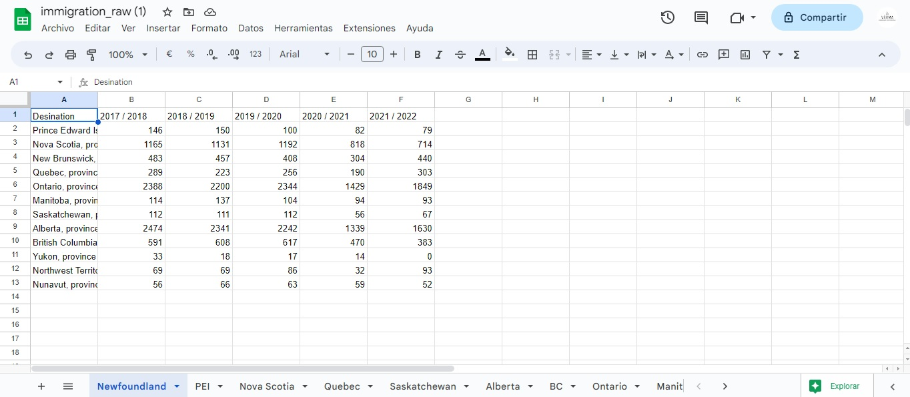
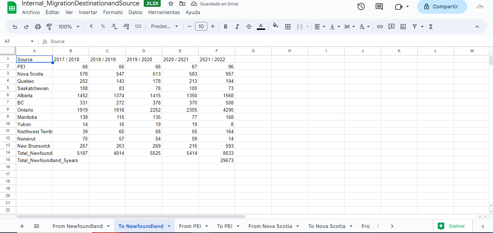
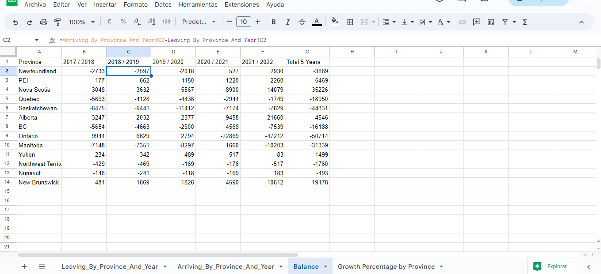
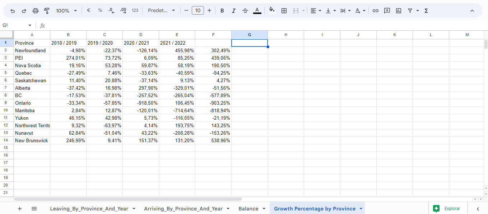
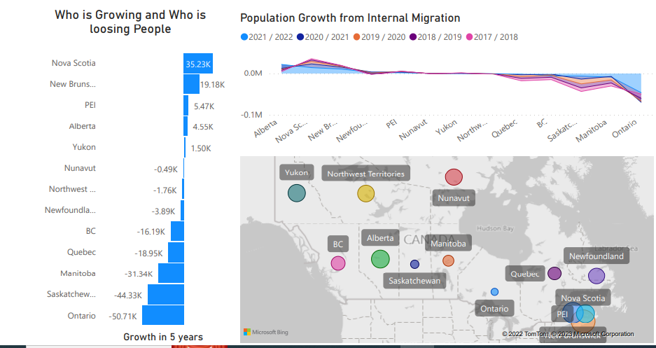
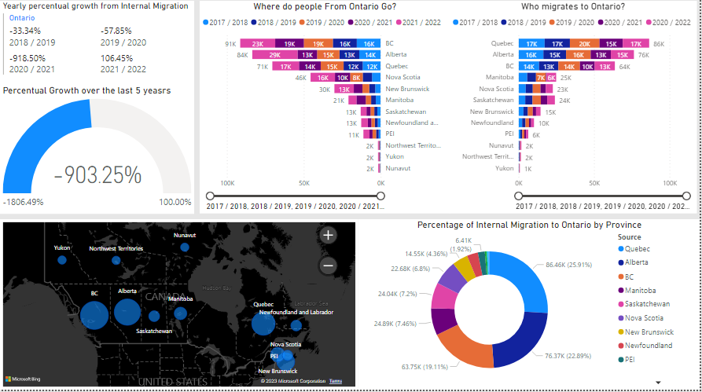
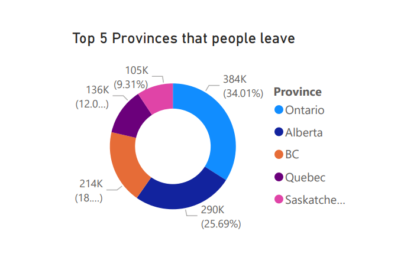

Canada's Interprovincial Migration
Data Aanalysis
Case of study
Canada was ranked #8 on the list of Countries with the Highest number
of Foreign-Born Residents, with 8 million immigrants in 2020 (according to worldpopulationreview.com)
So it is no secret that immigration plays a major role in the development of Canada;
but there is another form of migration that we don't hear about most of the time.
Interprovincial Migration, is the type of migration that occurs between provinces.
When my family and I moved to Nova Scotia in 2022 and started looking for a place to live (rent);
we faced one of the first signs of the rapid increase of internal migration toward this province:
High housing prices and the lack of available places to rent.
It didn't took us a long time to figure out that Canadians from other provinces were the ones who
either bought or rented most of the houses available in this province, and this all started during
the pandemic.
So i decided to dig a little deeper, the main question wasn't why, but Where to and Where from? The first thing I did was to go into the official Canadian statistics web site to find about the interprovincial migration in the last 5 years (https://www150.statcan.gc.ca/t1/tbl1/en/tv.action?pid=1710002201), where I found all the information I needed, got the .csv files, transformed and cleaned the information, generated the queries I needed plus some new tables using SQL and Google Sheets. Then after I got all the information in good shape I built a dashboard/report on Power Bi.
These are the tables i got in raw form for each province. The tables consisted of the destinations where the habitants of that province migrated to by year.

That gave me the Where to?, so in order for me to get the Where from? i collected all the rows with the same province as destination in all the tables and created a new table called to[Province_Name] that will give me the where from and i called that column "Source".

Lastly, I calculated the "balance" which will give us a real perspective of how the Interprovincial migration affected each province.
I calculated this by subtracting the people that left the province from the people that arrived in the province year by year and in the last 5 years.
That is just the numerical raw balance but then I calculated the "Percentual balance" which is the percentual balance difference from the previous year.
For example, if last year your immigration balance was +100 people and the next year your balance is -50, then your percentual balance compared to the last year is -50%
This way we can compare the positive or negative growth of each province more objectively, plus we can now see trends and tendencies.

As you can see we don't show the percentual balance from 2017 given that we take that year as our initial reference or our 100%

The BI Dashboard
The dashboard consists of The main sheet that I called "The big picture" Here we can see When the migration peaked?,
Wich provinces are having a negative growth and a positive growth,
Where do Canadians tend to migrate to? and What provinces are the main ones sending people to other provinces?.
If You click on the ">" button you will then see a province by province more in depth Analysis.
The results
Where to? Although a lot of people are still moving to the main provinces: Ontario and British Columbia , those two Provinces where at the same time the ones losing a lot of people, in fact more people where leaving those provinces than coming to those provinces. Ontario being the province that lost more people after calculating the "balance" (the difference between the number of people coming vs leaving), Ontario had a big negative migration balance, they had a -900% population balance from internal migration. It seemed like the pandemic and its side effects on the housing and economy made a lot of people move in a big "Exodus" towards other provinces, Only in 2022 they lost +47k people in that balance. This means that the difference between the people who moved to Ontario vs the people who left Ontario was of -47k. On the other hand, we have Nova Scotia with a positive migration Balance of +14k in 2022, and a percentual balance of +190%. Nova Scotia seemed like the place where everyone who arrived wants to stay, just followed by New Brunswick with a positive migration Balance of +10k and a percentual balance of +500%!!

Ontario

Nova Scotia

Where from? The answer of where or which provinces are sending more people out to other provinces is directly proportional to the first question... The provinces losing more people are the ones that are re-populating other small provinces(small in most cases except for Alberta), Ontario is the province where most of the migration is coming from, followed by Alberta and British Columbia. In the last 5 years, Ontario lost +300k people, Alberta +290k, and BC lost+200k . Even when those provinces were the top 3 destinations for internal migration, they are still losing more people than the rest of the country. 
Conclusion
While making this analysis i realized that i might have not discovered anything new amongst Canadians who are migrating to other provinces or know of someone who migrated; but is not the same to have an idea or a vague perception of how Canada's demographic is now way different because of a massive internal migration mainly because of the pandemic and the cost of living.
Now it seems like the Atlantic side of Canada is a "hot spot" because of the lack of population and relatively low Housing Prices, 2020 / 2021 were the key years for this exodus.
But... now this brings more questions to my mind, like, since people from Ontario, BC, Alberta,
and Quebec, are massively populating small provinces, how will this affect the infrastructure
of those provinces, how will the newcomers change the culture, the quality of services,
traditions, etc. Will the province change the newcomers or will the newcomers change
the province? The rabbit hole is deep, but the next year will tell us more about it,
i will keep digging since i believe that im witnessing something historical, a
breaking point in CanadianHistory. You can access all of my files
here https://github.com/DavidAceituno88/Internal_Migration_Canada_DataAnalisys
Linkedin